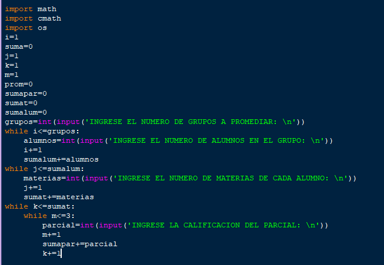
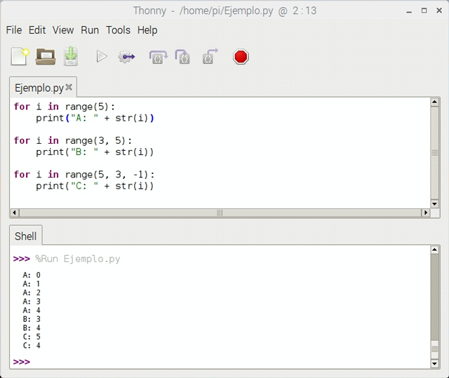

Las estructuras de control de flujo condicionales, se definen mediante el uso de tres palabras claves reservadas, del lenguaje: if (si), elif (sino, si) y else (sino).
if semaforo = = verde:
print "Cruzar la calle"
else:
print "Esperar"
if compra <=100:
elif compra > 100 and compra < 300:
print "Pago con tarjeta de débito"
else:
print "Pago con tarjeta de crédito"
En Python se pueden utilizar dos tipos de ciclos: for y while. Recordemos que los ciclos se utilizan cuando es necesario ejecutar un bloque de instrucciones varias veces, hasta que, o mientras que, se cumpla una condición dada.
WhileEl ciclo while permite ejecutar un bloque de instrucciones mientras se cumpla la condición dada.
Primero
comprueba que en efecto se cumple la condición dada y entonces, ejecuta el segmento de código
correspondiente hasta que la condición no se cumpla.

Los ciclos for permiten ejecutar una o varias instrucciones de forma iterativa, una vez por cada elemento
en la colección.
Las colecciones pueden ser de varios tipos, el for puede recibir una colección predefinida o
directamente de la salida de una función.
